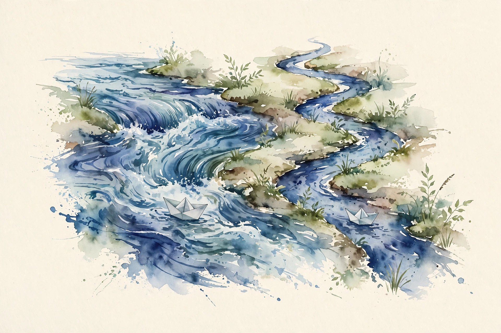

Companion · narrated from the lesson document
The first token is slow, the rest are expensive. This companion walks the inference unit: prefill vs decode, the KV cache, sharing, continuous batching, paging, speculative decoding, sampling controls, quantization, latency tails, and the load-quality-cost triangle.
From the lesson The idea, and every number beside it, comes from the cited section of u11_inference.md. The phrasing is the companion's.
Illustration Invented by the companion: an analogy, a toy with made-up values, or a what-if. Never lecture content.
companion Companion voice: the idea above the tag is from the lesson. The generalization below it is the companion's.
Provenance: no full lecture transcript exists for this session. The page narrates the lesson document content/v2/cs336/lessons/u11_inference.md, not a video. Claim class: REQUESTED-BRANCH. Standing note: no GPU on the lesson's build box. Serving claims are time models and numpy simulations. Reference inference model: L=32. Every number carries the lesson section that reports it.

Section 1 · Remediation, C01
From the lessonRemediation, C01 §2, §5, §6
Why is the first token slow and the rest fast-ish but expensive? Inference has two phases. Prefill processes the whole prompt at once: compute-bound, like training. Decode generates one token at a time: memory-bound, because each step re-reads all the weights. The lesson's toy from compute_u11.py: prefill at T=2048 has intensity about 2048 FLOP/byte, decode sits at 1.0 FLOP/byte. One decode token reads 14.0 GB of weights on the 7B bf16 reference. Prefill is a wide matmul: the weights are read once and reused across T tokens. Decode is a skinny matvec: the weights are read once per token. Same weights, opposite bottlenecks. Decode FLOPs per token are about 2N, bytes read about 2N: intensity about 1 FLOP/byte. Prefill reuses each weight read across T positions: intensity about T. The roofline knee decides which side each phase lands on.
From the lessonC01 §9, §10, §11
The toy ignores attention FLOPs in prefill (O(T^2)) and the KV write cost. At long T, prefill attention dominates. Split long prompts into chunks (chunked prefill) when prefill latency spikes. Use plain prefill otherwise. The failure case: batch 64 at T=8192, where the KV cache alone is 68.7 GB and decode stops being a pure weight-read story. The assumption "decode reads only weights" breaks. Cache traffic joins the bottleneck.
visuals/compute_u11.py (executed 2026-10-06).Prefill is compute-bound, decode is memory-bound. Every serving decision below flows from this split.
Section 2 · C02
From the lessonC02 §2, §5, §6
Where does the memory go during a long generation? Each decode step appends one K and one V vector per layer per head. The cache grows linearly in tokens. It is the price of never recomputing attention over the past. 2 (K and V) x 32 layers x 8 heads x 128 dims x 2 bytes = 131,072 bytes per token. The lesson's run, executed 2026-10-06: 128.0 KB per token. Batch 1 at T=2048 needs 0.27 GB, batch 16 at T=4096 needs 8.59 GB, batch 64 at T=8192 needs 68.72 GB.
From the lessonC02 §9, §10, §11
The cache competes with weights and activations for HBM. At 68.7 GB it exceeds the 14 GB weights by 5x. Recomputing K/V from scratch each step costs quadratic work. The cache always wins past a few dozen tokens. The failure case: the lesson assumes 8 KV heads (GQA). With full MHA (32 KV heads) the per-token cost is 512 KB, 4x more, and the batch-16 case jumps to 34 GB. The assumption "8 KV heads" breaks per architecture. Recompute per model.
visuals/compute_u11.py (executed 2026-10-06).From the lessonC02 §5 KV cache toy. 128 KB per token on the reference.
Batch Tokens
Press the button.
At the defaults: 16 × 4096 × 128 KB = 8.59 GB, matching C02 §6.
128 KB per token. At batch 64 and T=8192 the cache is 68.72 GB: 5x the weights.
Section 3 · C03, C09
From the lessonC03 §2, §5, §6
Ten requests share a 2000-token system prompt. Do you store it ten times? The prefix K/V depends only on the prefix tokens, not on who asked. Store it once, point every request at it. K/V are deterministic functions of the input tokens (no sampling inside). Identical inputs give identical cache blocks, so one copy serves all readers. From the C02 per-token value: unshared 2.62 GB, shared once 0.26 GB, saving 2.36 GB. Sharing is a memory optimization with zero quality change. The cost: reference counting and eviction. A shared block cannot be freed while any request reads it. The bookkeeping is small, the bug surface is real. The failure case: prefixes that differ by one token share nothing. The hash is all-or-nothing. The assumption "prefixes match" breaks with per-user system prompts, and sharing saves zero.
From the lessonC09 §2, §5, §6
A chat session sends the full history every turn. Must the prefill redo it all? No. With the prefix cache, turn n reuses turns 1 through n-1 and prefills only the new tokens. The lesson's toy: history 1500 tokens, new turn 100. Prefill work falls from 1600 to 100 token-equivalents. The cache saves 1500 x 128 KB = 192 MB of recompute traffic per turn, plus the attention FLOPs. Storing per-session caches costs memory between turns. The eviction policy decides the hit rate. The failure case: the template version changes mid-session. Token sequences shift and the cache is silently wrong if the hash ignores the template. The assumption "template fixed" breaks. Version the cache key.
Section 4 · C04, C05
From the lessonC04 §2, §5, §6
Four requests take 100, 400, 250, 800 steps. Static batching waits 800 steps for all. At each decode iteration, evict finished sequences and insert waiting ones (after their prefill). Slot utilization stays near 100 percent whenever the queue is nonempty. The lesson's run, executed 2026-10-06: continuous batching with 2 slots finishes the same token count in 775 steps of slot-time against 800 steps of wall time for the static batch, and new requests start immediately instead of waiting for the batch. Static batching is a bus that waits for every passenger. Continuous batching is a taxi rank: a finished request leaves, a new one takes its slot at the next iteration. No slot idles while work waits. The cost: prefill of an inserted request stalls the decode batch for one iteration (the prefill/decode interference). Chunked prefill (C01) bounds the stall. The failure case: all requests arrive at once with identical length. Continuous batching gains nothing over static. The assumption "lengths vary" breaks, and the extra scheduler complexity buys zero.
From the lessonC05 §2, §5, §6
Requests have different lengths. Contiguous allocation wastes the gaps. Operating-system paging for the KV cache: split each sequence into fixed blocks, allocate blocks on demand, translate logical position to physical block. Waste drops to less than one block per sequence. Contiguous reserves max length per slot: waste = (maxT*n - sum)/(maxT*n). Paged reserves ceil(len/16) blocks: waste under 16 tokens per sequence. The lesson's run on lengths [512, 2048, 4096, 1024, 3072, 1536], executed 2026-10-06: contiguous waste 50.0 percent, paged waste with block 16 is 0.0 percent (all lengths are multiples of 16 here). The attention kernel must gather through the block table: extra indirection per memory access. Block size trades waste against table size. The failure case: block size 4096 with 100-token requests. Internal fragmentation returns and paging saves nothing. The assumption "block much smaller than length" breaks. Size blocks to the workload.
The taxi rank beats the bus whenever request lengths vary, which is always.
Section 5 · C06, C07
From the lessonC06 §2, §5, §6
A small model guesses 3 tokens, the big model checks them in one pass. When does this win? The draft model proposes, the target model disposes in a single parallel verify. Accepted tokens are free. A rejection costs the draft work but still yields the corrected token. Throughput follows the acceptance rate. Expected accepted run length for k drafts: E = (1 - alpha^{k+1})/(1 - alpha). Cost per step = k*c_draft + 1. Speedup = E / cost. The lesson's run, executed 2026-10-06: alpha = 0.7, k = 3 gives E = 2.53 tokens per verify step, with draft cost 0.1 the speedup is 1.95x. More: 0.3 gives 1.09x, 0.5 gives 1.44x, 0.9 gives 2.65x. Draft forwards cost memory bandwidth too. k too large wastes draft work on likely rejections. The failure case: draft and target disagree on style (different fine-tunes). Alpha collapses to 0.2 and the speedup falls below 1. The assumption "draft approximates target" breaks. Align the draft or drop the scheme.
From the lessonC07 §2, §5, §6
If the draft is wrong half the time, does the output still match the big model? Yes, with the right acceptance rule: accept token x with probability min(1, p_target(x)/p_draft(x)), else resample from the adjusted distribution. Rejection sampling: the draft proposes, the target corrects. The acceptance probability exactly compensates the proposal bias. The output law equals the target law, token by token. On rejection, sample from norm(max(0, p - q)). The lesson's toy: p = [0.7, 0.3], q = [0.5, 0.5]. Token 1 accepted with min(1, 1.4) = 1.0, token 2 with min(1, 0.6) = 0.6. The mixture recovers p. Exactness costs the resampling branch and the extra distribution arithmetic. Approximate acceptance (always take the draft) is cheaper and wrong. The failure case: a draft with zero mass on a token the target can emit. The support assumption breaks and exactness fails. The fix is a draft with full support (temperature above 0).
visuals/compute_u11.py (executed 2026-10-06).From the lessonC06 §5 Speculation toy. E = (1 - alpha^{k+1})/(1 - alpha), speedup = E/(k × 0.1 + 1).
Acceptance alpha Drafts k
Press the button.
At the defaults: E = 2.53 tokens per verify, speedup 1.95x, matching C06 §6.
Throughput follows the acceptance rate: 0.7 gives 1.95x, 0.3 gives 1.09x.
Accept with min(1, p_target/p_draft), else resample from norm(max(0, p - q)). The output law equals the target law.
Section 6 · C08
From the lessonC08 §2, §5, §6
Logits [3, 2, 1, 0]: what does temperature do? Temperature divides the logits: low temp sharpens, high temp flattens. Top-p keeps the smallest set with cumulative mass p. Top-k keeps k tokens. All three trade diversity against focus. p_i = softmax(z_i / T). As T goes to 0, p concentrates on the argmax. As T goes to infinity, p flattens to uniform. Top-p truncates and renormalizes. The lesson's run, executed 2026-10-06: temp 0.5 gives top-1 prob 0.865 and entropy 0.66 bits. Temp 1.0 gives 0.644 and 1.37 bits. Temp 2.0 gives 0.455 and 1.80 bits. Top-p 0.9 keeps 3 of 4 tokens. Truncation discards tail mass that sometimes holds the right answer. Temperature 0 kills diversity and exploration. Beam search is the deterministic, expensive alternative for exact-ish decoding. Sampling is for diversity and pass@k metrics. The failure case: top-p 0.9 on a flat distribution keeps nearly everything. The control does nothing. The assumption "the head holds the mass" breaks on high-entropy steps.
Section 7 · C10
From the lessonC10 §2, §5, §6
The 7B model needs 14.0 GB in fp16. What do int8 and int4 buy? Memory = N x bytes-per-param. Halving the bits halves the weight traffic per decode token, which is the decode bottleneck (C01). The lesson's run, executed 2026-10-06: int8 7.0 GB, int4 3.50 GB. The quality delta is not computed here: it must be measured on evals (U12), never assumed. Quantization stores weights in fewer bits. The matmul may dequantize on the fly or compute in low precision. Distillation trains a small student on a big teacher's outputs: a different, smaller model, not a compressed one. Quality risk concentrates in outliers and at small scales. Calibration data and evals (U12) are the real cost. Distill (new small model, needs teacher outputs and training) instead of overtraining from scratch. Quantize (same model, needs evals) for fast wins. The failure case: per-tensor int4 on a model with large activation outliers. Quality collapses on math tasks while prose looks fine. The assumption "quality holds" breaks. Evaluate per capability slice (U12-C10).
visuals/compute_u11.py (executed 2026-10-06).Section 8 · C11
From the lessonC11 §2, §5, §6
Mean latency looks fine, but users complain. What is the tail? TTFT measures prefill plus queueing. TPOT measures decode pacing. Means hide the tail. The p99 decides the user experience. For an exponential with mean m, p99 = m * ln(100) = 4.6m. The lesson's toy with exponential service times, executed 2026-10-06: TTFT mean 120 ms, p99 533 ms. TPOT mean 8.0 ms, p99 38.1 ms. The p99 is 4-5x the mean. The toy shows 533/120 = 4.4 and 38.1/8 = 4.8, matching the theory within sampling noise. Real tails come from queueing, prefill interference, and retries, not just service variance. The toy understates the real p99. SLOs on p50 are cheap to meet while users still suffer. SLOs on p99 are the honest contract for user-facing serving. The failure case: a traffic spike makes queueing dominate. p99 explodes while the service-time toy stays calm. The assumption "no queueing" breaks. Model the queue (C12).
The p99 is 4-5x the mean: TTFT 120/533 ms, TPOT 8.0/38.1 ms. Means hide the tail.
Section 9 · C12
From the lessonC12 §2, §5, §6
Load doubles. What gives: quality, cost, or latency? Something must: serve a smaller/quantized model (quality), add GPUs (cost), or let the queue grow (latency). A triangle with load, quality, and cost at the corners. Latency is the slack variable. Every serving decision moves along an edge. Name the edge before deciding. Capacity per GPU = 1 / (mean service time). GPUs needed = peak RPS / capacity, rounded up with headroom. Quality enters through the model choice, cost through the GPU count. The lesson's toy: TPOT 8 ms/token, 100 output tokens: 0.8 s decode per request per GPU slot. At 10 RPS with 2 slots per GPU, 5 GPUs serve the mean load. The p99 needs headroom on top. The toy ignores prefill, batching efficiency, and traffic shape. Real sizing needs the measured distributions. Overprovision is simple and expensive. Autoscale is complex and lags spikes. A fixed pool with queue SLOs is the middle path. The failure case: provisioned for the mean RPS. The p99 traffic hour queues and the SLO burns. The assumption "mean load" breaks. Provision for a high quantile of demand.
Something must give: smaller model, more GPUs, or a longer queue. Name the edge before deciding.
Section 10 · Synthesis
From the lesson The arc, end to end. Prefill is compute-bound, decode is memory-bound (remediation, C01). The KV cache grows at 128 KB per token and sets the batch limit (C02). Shared prefixes store once (C03). Growing prefixes append (C09). Continuous batching turns the bus into a taxi rank (C04). Paging kills fragmentation (C05). Speculation converts acceptance rate into speedup, exactly (C06, C07). Temperature, top-p, and top-k reshape the distribution (C08). Quantization halves the weight traffic per bit halved. The quality delta is measured, never assumed (C10). The p99 is 4-5x the mean (C11). Load, quality, and cost form the triangle. Latency is the slack (C12).
From the lesson Where the unit points next, in the lesson's own forward links: U06 supplies the roofline that classifies the two phases. U09 supplies the inference-parallelism choice (TP for latency, PP for throughput). U10 supplies the inference-optimal objective that decides model size. U12 supplies the evals that certify quantization and distillation quality.
Wisdom index
Each nugget states the idea in plain words, why it matters, and the transferable principle. Every one is anchored to its lesson section.